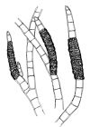

Prácticas de Biología marina: algas
pardas
Orden Ectocarpales
1.- Características del orden
- Talo de organización filamentosa o
pseudoparenquimática
- Fam. Ectocarpáceas: talo filamentoso muy
ramificado, con ramificación de tipo lateral
- Plastos alargados y poco numerosos (Ectocarpus)
- Plastos discoidales y numerosos (Feldmannia, Hinksia,
Pilayella)
- Fam. Ralfsiáceas: talo
pseudoparenquimático incrustante, formando manchas
epilíticas
- Ciclo biológico
digenético isomórfico, con estructuras reproductoras de dos
tipos:
- Esporangios o gametangios pluriloculares con forma de
pequeñas piñas laterales o intercaladas en el talo
- Esporangios uniloculares que producen 4 esporas por meiosis
2.- Cuadro
resumen
Géneros
|
Especies
|
Caracteres
|
Imágenes
|
Ectocarpus
|
E. fasciculatus
|
Talo filamentoso con
ramificación lateral.
Células con pocos plastos de gran
tamaño y forma acintada
Esporangios pedunculados, situados en la parte
superior de las ramas
Rámulas formando fascículos en
el extremo de las ramas
|
|
E. siliculosus
|
Rámulas
no formando fascículos en el extremo de las ramas
|
|
Feldmannia
|
F. paradoxa
|
Células con numerosos
plastos pequeños y discoidales
Esporangios pedunculados
Ramas laterales y esporangios situados en la
base de las ramas principales
|
|
F. irregularis
|
Ramas laterales
y esporangios repartidos irregularmente
|
|
Hinksia
|
H. granulosa
|
Esporangios sentados
Ramas opuestas o unilaterales. Esporangios no formando series
|
|
H. hinksiae
|
Ramas
unilaterales. Espororangios formando series
|

|
Pilayella
|
P. littoralis
|
Esporangios
intercalados en los filamentos
|

|
Ralfsia
|
R. verrucosa
|
Talo
pseudoparenquimático incrustante
|
|
3.- Más datos sobre Ectocarpales
del litoral atlántico andaluz
(tomados de C. Romero Zarco, Introducción
al estudio del macrofitobentos marino de Andalucía occidental,
Universidad de Sevilla, guia de prácticas inédita)
Familia
Ectocarpáceas (Ectocarpaceae)
Ectocarpus Lyngb.,
1819. Dos especies en ambas costas de la Península.
| 1. |
Rámulas formando fascículos en el
extremo de las ramas |
E.fasciculatus
|
| 1. |
Rámulas no formando fascículos en el
extremo de las ramas |
E. siliculosus
|
E. fasciculatus Harv., 1841. Citada
en Tarifa como epífito abundante de Saccorhiza polyschides
durante el verano (Seoane-Camba, 1965). La variedad draparnaldioides
Crouan frat. ha sido citada en Ayamonte (arrojada en Punta de
Afuera) por Navarro & Gallardo (1994). Atlántica boreal.
E. siliculosus
Dillwyn) Lyngb., 1819 [inc. E. confervoides Roth, = E.
fasciculatus var. confervoides (Roth) Kjellm.. Especie
muy polimórfica. Rara en Cádiz, sobre fragmentos de
madera o epífita (Seoane-Camba, 1965). También rara en
Huelva, donde ha sido citada de Isla Cristina por Navarro &
Gallardo (1994). Fotófila infralitoral portuaria. Cosmopolita.
Feldmannia Hamel,
1841. El número de especies ibéricas es incierto,
Gallardo & al. (1985) citan cuatro, pero Flores-Moya & al.
(1994) enumeran seis sólo para el litoral andaluz. Según
Gallardo & al. (1985) las especies de este género
corresponden probablemente a fases de crecimiento de distintas especies
del género Acinetospora (Ectocarpáceas).
F. paradoxa (Mont.) Hamel. Rara,
observada en Septiembre en Tarifa formando penachos mucosos sobre
Cystoseira (Seoane-Camba, 1965). Mediterránea.
Fotófila infralitoral de zonas batidas. Indo-atlántica
templadofría.
F. irregularis (Kütz.) Hamel.
Rara, citada en Ayamonte (Isla del Moral) por Navarro & Gallardo
(1994) como epífita de Scytosiphon simplicissimus.
Hincksia J.
E. Gray (= Giffordia Batters). Siete especies en la
Península (3 atlánticas, una mediterránea y 3 en
ambos litorales).
| 1. |
Ramas opuestas o unilaterales. Esporangios no
formando series |
H.granulosa
|
| 1. |
Ramas unilaterales. Espororangios formando series |
H.hincksiae
|
H. granulosa (Sm.) Silva, 1987 [= Ectocarpus
granulosus Sm., Giffordia granulosa (Sm.) Hamel]. Rara en
Cádiz, observada en Tarifa sobre Cystoseira (Seoane-Camba,
1965). También rara en Huelva, sobre Sargassum vulgare
en Ayamente (Navarro & Gallardo, 1994). Subcosmopolita.
H.
hincksiae (Harv.) Silva, 1987 [= Ectocarpus hincksiae
Harv., Giffordia hincksiae (Harv.) Hamel]. Localmente abundante
en Cádiz durante el verano sobre Saccorhiza (Seoane-Camba,
1965). Atlántica en la P.I. Atlántica boreal.
Pilayella
Bory, 1823. Una sola especie atlántica y mediterránea.
P.
littoralis (L.) Kjellm., 1872. Hay una cita antigua de
Cádiz de González Fragoso (1893), pero ha sido observada
recientemente por alumnos de Biología como epífita en una
muestra de Cladostephus procedente
de Chipiona. Sin datos de distribución mundial.
Familia
Ralfsiáceas
Ralfsia Berk.,
1831. Dos especies conocidas en la Península (una de ellas
exclusivamente atlántica).
R. verrucosa (Areschoug) J. Agardh,
1848. Frecuente en Cádiz, recubriendo piedras mesolitorales
(Seoane-Camba, 1965). También citada en Ayamonte por Navarro
& Gallardo,
1994). Rocas mesolitorales del horizonte inferior.
Atlanto-pacífica
templado-fría.
Volver
a Algas_pardas.htm
Página publicada el 17-03-2003,
© C.
Romero Zarco, Universidad de Sevilla